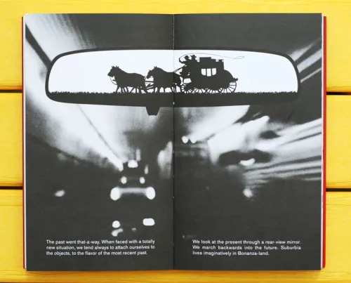

The text "The Medium is the Massage" is about how the advancements of technology around us changes aspects of our personal lives. Factors such as relationships with family, friends etc. can change as well as our interactions with others and our education. The idea that each medium expands a specific sense or aspect of human perception is one of McLuhan's key ideas. For instance, print enhances the visual sense, whereas television simultaneously enhances the auditory and visual senses. The phrase "global village" was coined by McLuhan to describe how electronic media, such as television and the internet, would foster a sense of interconnectedness and global connectivity among people.
